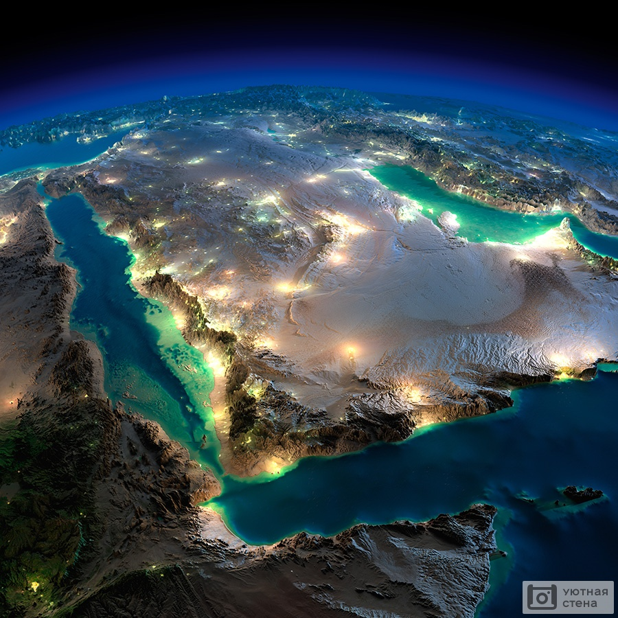

Земля́ — третья по удалённости от Солнца планета Солнечной системы. Самая плотная, пятая по диаметру и массе среди всех планет и крупнейшая среди планет земной группы, в которую входят также Меркурий, Венера и Марс. Единственное известное человеку в настоящее время тело Солнечной системы в частности и Вселенной вообще, населённое живыми организмами.
Строение Земли
Земля относится к планетам земной группы, и в отличие от газовых гигантов, таких как Юпитер, имеет твёрдую поверхность. Это крупнейшая из четырёх планет земной группы в Солнечной системе, как по размеру, так и по массе. Кроме того, Земля среди этих четырёх планет имеет наибольшие плотность, поверхностную гравитацию и магнитное поле[83]. Это единственная известная планета с активной тектоникой плит[84]. Недра Земли делятся на слои по химическим и физическим (реологическим) свойствам, но в отличие от других планет земной группы, Земля имеет ярко выраженное внешнее и внутреннее ядро. Наружный слой Земли представляет собой твёрдую оболочку, состоящую главным образом из силикатов. От мантии она отделена границей с резким увеличением скоростей продольных сейсмических волн — поверхностью Мохоровичича[85]. Твёрдая кора и вязкая верхняя часть мантии составляют литосферу[86]. Под литосферой находится астеносфера, слой относительно низкой вязкости, твёрдости и прочности в верхней мантии[87]. Значительные изменения кристаллической структуры мантии происходят на глубине 410—660 км ниже поверхности, охватывающей (переходную зону[en]), которая отделяет верхнюю и нижнюю мантию. Под мантией находится жидкий слой, состоящий из расплавленного железа с примесями никеля, серы и кремния — ядро Земли[88]. Сейсмические измерения показывают, что оно состоит из двух частей: твёрдого внутреннего ядра (радиус ~ 1220 км) и жидкого внешнего ядра (радиус ~ 2250 км)
